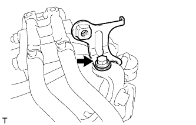
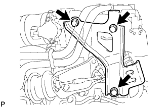
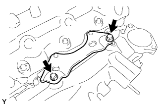
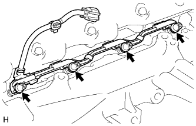
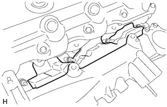
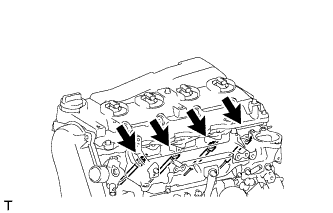

СВЕЧА НАКАЛИВАНИЯ (для моделей с DPF) > СНЯТИЕ |
| 1. ОТСОЕДИНИТЕ ПРОВОД ОТ ОТРИЦАТЕЛЬНОГО ВЫВОДА АККУМУЛЯТОРНОЙ БАТАРЕИ |
| 2. СНИМИТЕ ЭЛЕКТРИЧЕСКИЙ КЛАПАН УПРАВЛЕНИЯ РОГ В СБОРЕ |
| 3. СНИМИТЕ ДАТЧИК АБСОЛЮТНОГО ДАВЛЕНИЯ В КОЛЛЕКТОРЕ |
 |
Отсоедините разъем датчика абсолютного давления в коллекторе и вакуумный шланг.
Выверните болт и снимите датчик абсолютного давления в коллекторе.
| 4. СНИМИТЕ КРОНШТЕЙН КЛАПАНА СИСТЕМЫ СНИЖЕНИЯ ТОКСИЧНОСТИ ОТРАБОТАВШИХ ГАЗОВ |
|  |
Выверните болт и снимите кронштейн клапана системы снижения токсичности отработавших газов.
| 5. СНИМИТЕ КРОНШТЕЙН КОРПУСА ДРОССЕЛЬНОЙ ЗАСЛОНКИ |
|  |
Выверните 3 болта и снимите кронштейн корпуса дроссельной заслонки.
| 6. СНИМИТЕ ГАЗОВЫЙ ФИЛЬТР № 1 |
 |
Отсоедините вакуумный шланг и снимите газовый фильтр № 1 с кронштейна газового фильтра.
| 7. СНИМИТЕ КРОНШТЕЙН ГАЗОВОГО ФИЛЬТРА |
 |
Освободите зажим, чтобы отсоединить жгут проводов.
 |
Выверните болт и снимите кронштейн газового фильтра.
| 8. ОТСОЕДИНИТЕ ЖГУТ ПРОВОДОВ |
 |
Выверните болт и отсоедините жгут проводов.
 |
Для моделей с левосторонним рулевым управлением:
Выверните болт и отсоедините жгут проводов.
Освободите 5 зажимов и отсоедините жгут проводов от верхней панели кожуха.
| 9. СНИМИТЕ ПАТРУБОК ПОДАЧИ ВОЗДУХА |
 |
Выверните 3 болта и снимите патрубок подачи воздуха и прокладку.
| 10. СНИМИТЕ ОПОРУ КОЛЛЕКТОРА № 2 |
|  |
Выверните болт и снимите опору коллектора № 2.
| 11. СНИМИТЕ РАЗЪЕМ СВЕЧИ НАКАЛИВАНИЯ № 1 |
Отсоедините разъем свечи накаливания № 1 от жгута проводов.
|  |
Снимите 4 уплотнительные шайбы винта.
 |
Отверните 4 гайки и снимите разъем свечи накаливания № 1.
| 12. СНИМИТЕ ИЗОЛЯТОР ВПУСКНОГО КОЛЛЕКТОРА № 1 |
|  |
| 13. СНИМИТЕ СВЕЧУ НАКАЛИВАНИЯ |
|  |
С помощью удлиненной торцевой головки на 12 мм снимите 4 свечи накаливания.